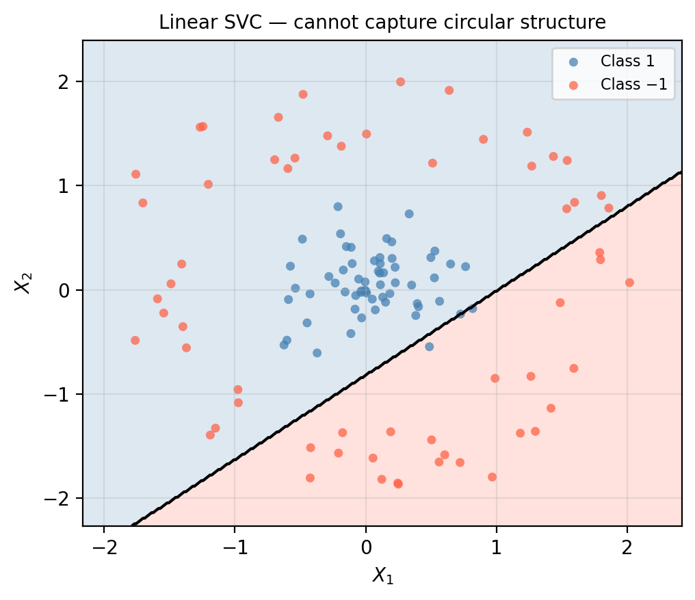

Support vector machines
In this lesson we introduce:
- The concept of the inner product and its role in the support vector classifier
- Feature-space augmentation as a strategy for non-linear classification
- The kernel trick as a computationally efficient way to enlarge the feature space
- The polynomial and radial kernels and the tuning parameters that control them
These notes are based on chapter 9 of An Introduction to Statistical Learning with Applications in Python (James et al. 2023). All example data is synthetic and was generated with the aid of Claude Code for the purpose of this lesson.
Inner product
Throughout this lesson we use the inner product (also called the dot product) between two vectors. If \(\mathbf{a} = (a_1, a_2, \ldots, a_p)\) and \(\mathbf{b} = (b_1, b_2, \ldots, b_p)\) are two vectors of the same length, their inner product is
\[\langle \mathbf{a},\, \mathbf{b} \rangle = \sum_{j=1}^{p} a_j b_j = a_1 b_1 + a_2 b_2 + \cdots + a_p b_p.\]
For example, if \(\mathbf{a} = (1, 2)\) and \(\mathbf{b} = (3, -1)\), then \(\langle \mathbf{a}, \mathbf{b} \rangle = 1 \cdot 3 + 2 \cdot (-1) = 1\).
We will return to this notation when we explain how kernels work at the end of the lesson.
Augmenting the feature space
In the previous lesson we saw that the support vector classifier finds the best linear boundary between two classes. But what if no straight line (or flat hyperplane) can adequately separate the classes?
One way to address this is to enlarge the feature space with additional features constructed from the original predictors. For instance, instead of fitting a support vector classifier with \(p\) features \(X_1, X_2, \ldots, X_p\), we could use \(2p\) features that include squared terms:
\[X_1,\; X_1^2,\; X_2,\; X_2^2,\; \ldots,\; X_p,\; X_p^2.\]
Adding these higher-order terms can create a non-linear boundary in the original space — even though the support vector classifier itself still fits a linear hyperplane in the enlarged space.
A one-dimensional example
Let us walk through the idea with a single predictor, \(X_1\). Suppose we have the following six training observations:

The two classes are interleaved: Class −1 occupies both extremes of the number line while Class 1 sits in the middle. No single cut point on \(X_1\) can separate them.
Now consider adding the feature \(X_1^2\). Each observation maps to a point \((X_1,\, X_1^2)\) in a two-dimensional space.
Check-in
Complete the table below by computing \(X_1^2\) for each observation. Then, on a piece of paper or in your head, sketch the six points in a \((X_1, X_1^2)\) coordinate system. Can you draw a straight line that separates the two classes in this 2D space?
| Observation | Class | \(X_1\) | \(X_1^2\) |
|---|---|---|---|
| 1 | −1 | −3.0 | |
| 2 | −1 | −1.5 | |
| 3 | +1 | −0.5 | |
| 4 | +1 | 0.5 | |
| 5 | −1 | 1.5 | |
| 6 | −1 | 3.0 |
Discussion
Observation Class $X_1$ $X_1^2$
1 -1 -3.0 9.00
2 -1 -1.5 2.25
3 1 -0.5 0.25
4 1 0.5 0.25
5 -1 1.5 2.25
6 -1 3.0 9.00Once we add \(X_1^2\), the Class 1 observations (small \(|X_1|\), low \(X_1^2\)) occupy the bottom of the 2D space, while the Class −1 observations (large \(|X_1|\), high \(X_1^2\)) sit higher up. A horizontal line separates them perfectly.

Yes — in the augmented 2D space the two classes are perfectly separable.
Projecting the boundary back to the original space
The support vector classifier found a linear boundary in the \((X_1, X_1^2)\) space. What does that boundary look like when projected back onto the original number line?
The linear boundary in the augmented space is approximately \(X_1^2 = 1.25\), which translates to \(|X_1| \approx \sqrt{1.25} \approx 1.12\) in the original space. This gives us two boundary points on the number line, not one — a genuinely non-linear boundary.

By augmenting the feature space we obtained a classifier that draws a non-linear boundary in the original space, even though it is entirely linear in the enlarged space.
Extending to two dimensions
The same idea applies when we have two or more predictors. Consider the dataset shown earlier with circular structure. We can augment the feature space with quadratic terms — \(X_1^2\), \(X_2^2\), and \(X_1 X_2\) — which effectively gives the classifier the ability to draw ellipses and circles as boundaries. The plot on the right below shows a linear support vector classifier applied to this data; it fails precisely because no straight line can separate an inner cluster from an outer ring.

The big idea: we want to enlarge the feature space in a way that allows us to find non-linear boundaries in the original space. We can use not only polynomial terms but also interaction terms, logarithms, and many other functions of the predictors — anything that embeds the data into a space where the classes become (more) linearly separable.
The challenge: deciding which additional features to include quickly becomes intractable as \(p\) grows. The kernel approach below solves this efficiently.
The support vector machine
The support vector machine (SVM) is an extension of the support vector classifier that enlarges the feature space in a specific, computationally efficient way using kernels.
A kernel \(K(x_i, x_j)\) is a function that measures a generalized notion of similarity between two observations. The details of how kernels connect to the feature-space enlargement are given in the appendix at the end of these notes. For our purposes, the key result is:
Replacing the inner product \(\langle x_i, x_j \rangle\) in the support vector classifier with a kernel function \(K(x_i, x_j)\) is equivalent to fitting a support vector classifier in an enlarged feature space — but without ever having to explicitly compute the new features.
We introduce two widely used kernels below.
Polynomial kernel
The polynomial kernel of degree \(d\) is defined as
\[K(x_i, x_j) = (1 + \langle x_i, x_j \rangle)^d, \quad d \geq 1.\]
- When \(d = 1\), this reduces to the linear kernel (the ordinary support vector classifier).
- For \(d \geq 2\), the resulting decision boundary is a polynomial curve of degree \(d\) in the original feature space.
- \(d\) is a tuning parameter: larger values produce more flexible, more curved boundaries.

With a degree-3 polynomial kernel the SVM now draws a curved boundary that correctly separates the inner cluster from the outer ring — something the linear support vector classifier could not do.
Radial kernel
The radial kernel (also called the Gaussian or RBF kernel) is defined as
\[K(x_i, x_j) = \exp\!\left(-\gamma \,\|x_i - x_j\|^2\right), \quad \gamma \geq 0.\]
Here \(\|x_i - x_j\|^2\) is the squared Euclidean distance between two observations. The kernel assigns high similarity to nearby observations and near-zero similarity to distant ones.
Because of its local behavior, only nearby training observations have an appreciable influence on the predicted class of a new point. The parameter \(\gamma\) controls how quickly the influence decays with distance:
- Larger \(\gamma\): influence decays rapidly → very local behavior → complex, highly flexible boundary.
- Smaller \(\gamma\): influence decays slowly → smoother, broader boundary.

The radial kernel adapts tightly to the circular structure of the data, producing a smooth, nearly circular decision boundary.
Check-in
Compare the three classifiers on the circular dataset.
- What accuracy would you expect from the linear SVC? Why can’t it do better?
- Both the polynomial SVM and the radial SVM handle this data well. In general, what is one advantage of the radial kernel over the polynomial kernel when the data structure is unknown?
- Both kernels have tuning parameters (\(d\) for polynomial, \(\gamma\) for radial) in addition to the budget \(C\). What method should be used to choose these parameters? What risk do you take if you select them by evaluating on the test set?
Discussion
The linear SVC is limited to a straight-line boundary. Because Class 1 is completely surrounded by Class −1, no line can separate them; the linear SVC is forced to misclassify roughly half of one class or the other, yielding accuracy near 50–60%.
The radial kernel adapts to local structure without committing to a specific polynomial form. When the true boundary is unknown, the polynomial kernel requires guessing an appropriate degree \(d\), while the RBF kernel can approximate a wide range of smooth boundaries by tuning \(\gamma\) alone. In practice, RBF is often the default first choice for non-linear SVMs.
Tuning parameters should be chosen using cross-validation on the training data, not by evaluating on the test set. Selecting them on the test set effectively “peeks” at the test data and produces an overly optimistic estimate of generalization performance.
Appendix: what is a kernel?
This section gives additional intuition for why kernels work. It can be skipped without loss of continuity.
Notation recap
Our goal is to classify an observation \(x = (x_1, \ldots, x_p)\) into one of two classes (\(+1\) or \(-1\)) using a training set of \(n\) labeled observations \(X_1, \ldots, X_n\), where each \(X_i = (X_{i1}, X_{i2}, \ldots, X_{ip})\) is a \(p\)-dimensional vector.
The linear SVC as an inner-product machine
It turns out that the linear support vector classifier can be written in terms of inner products between observations:
\[f(x) = \beta_0 + \sum_{i=1}^{n} \alpha_i \langle x,\, X_i \rangle,\]
where \(\beta_0, \alpha_1, \ldots, \alpha_n\) are parameters estimated during training. To classify a new observation \(x\), we compute \(f(x)\) and assign it to Class \(+1\) if \(f(x) > 0\) and Class \(-1\) if \(f(x) < 0\).
A crucial insight is that the parameters \(\alpha_i\) are non-zero only for the support vectors — all other training observations drop out of the sum.
The kernel trick
The parameters \(\alpha_1, \ldots, \alpha_n\) depend only on the inner products \(\langle X_i, X_j \rangle\) between pairs of training observations, not on the observations themselves.
This means we can replace the inner product with any kernel function
\[K(X_i, X_j) \quad \text{instead of} \quad \langle X_i, X_j \rangle,\]
and the same optimization procedure still works. The classifier becomes
\[f(x) = \beta_0 + \sum_{i \in \mathcal{S}} \alpha_i\, K(x, X_i),\]
where \(\mathcal{S}\) is the set of support vector indices.
The remarkable fact is that for certain kernel functions, this is mathematically equivalent to explicitly computing dot products in a very high-dimensional (possibly infinite-dimensional) feature space — without ever constructing those features. This is the kernel trick: we get the benefit of the enlarged feature space at the computational cost of evaluating \(K\) on pairs of observations.
| Kernel | Formula | Equivalent feature space |
|---|---|---|
| Linear | \(\langle x_i, x_j \rangle\) | Original \(p\) features |
| Polynomial (degree \(d\)) | \((1 + \langle x_i, x_j \rangle)^d\) | All monomials up to degree \(d\) |
| Radial (RBF) | \(\exp(-\gamma \|x_i - x_j\|^2)\) | Infinite-dimensional |
References
James, Gareth, Daniela Witten, Trevor Hastie, Robert Tibshirani, and Jonathan E. Taylor. 2023. An Introduction to Statistical Learning: With Applications in Python. Springer Texts in Statistics. Cham: Springer.